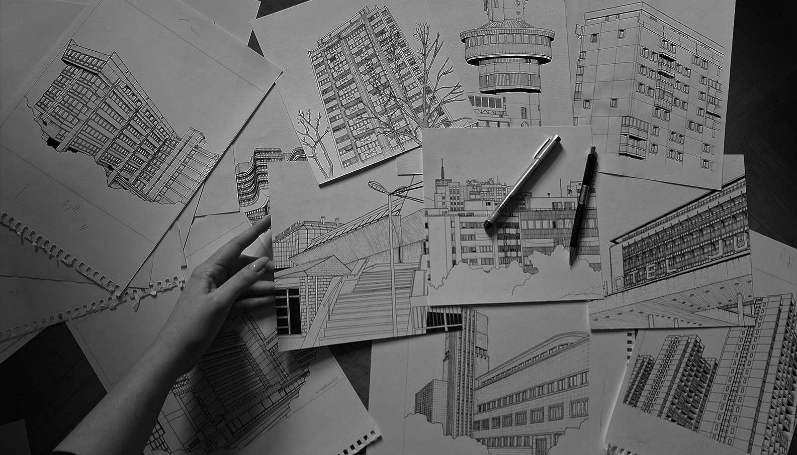
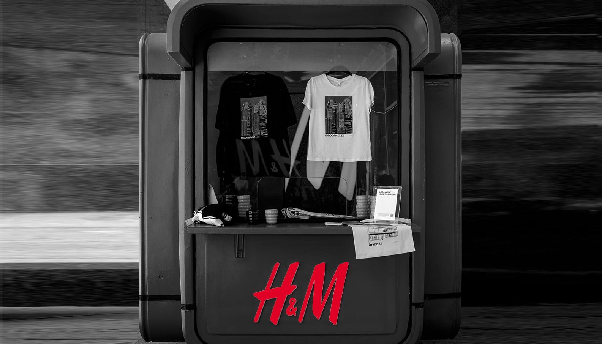
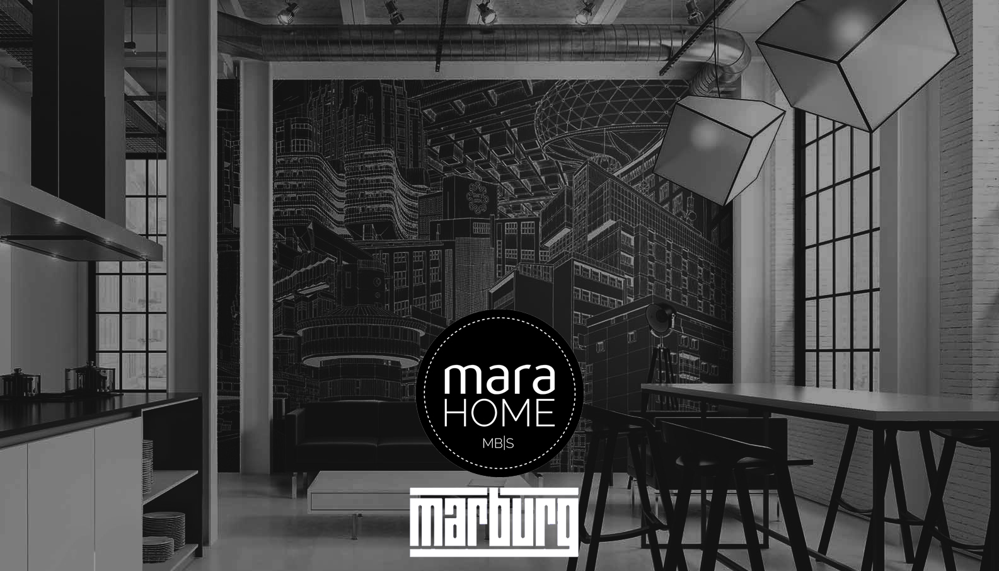
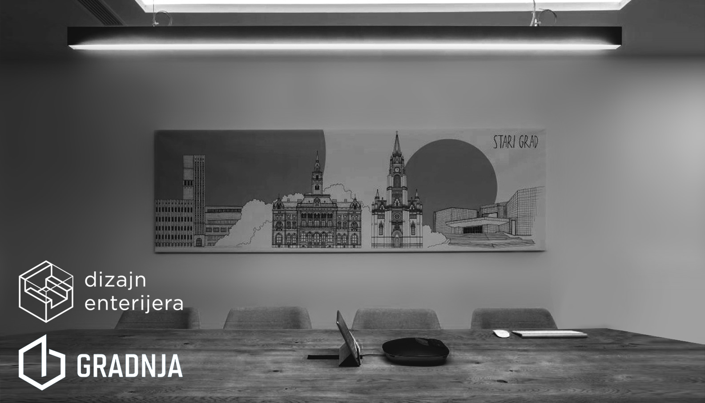
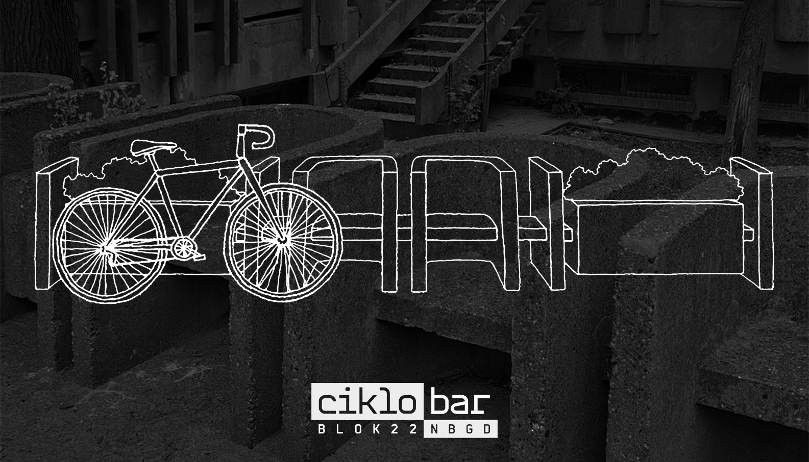
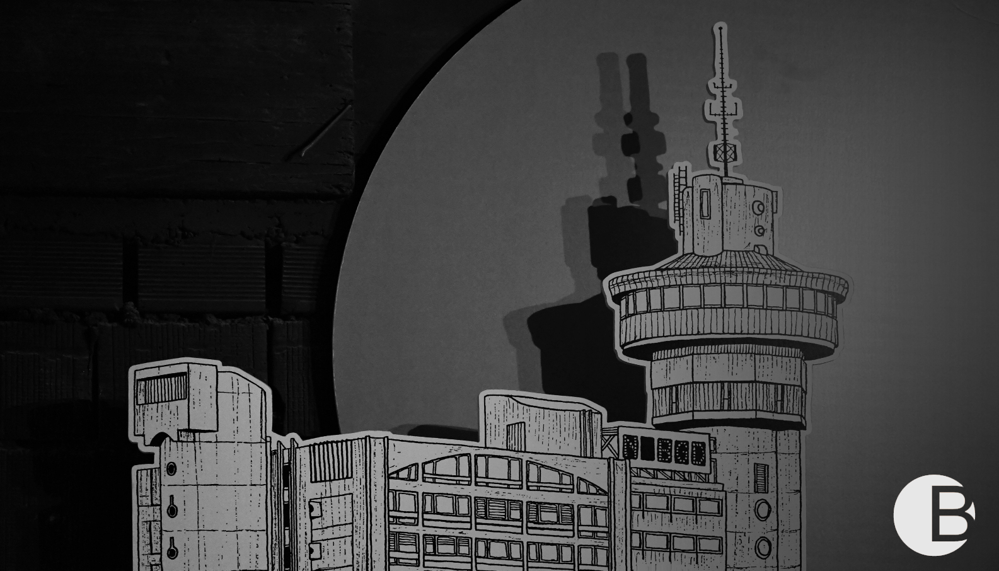

Architectural Illustrations and Projects by Jovana Radujko
jovana radujko
what i do
projects
contact
.

personal projects

H&M x New Media Team

Marahome x Marburg

Codecentric x Sonja Brstina

CikloBar

Balkan Architectural Biennale